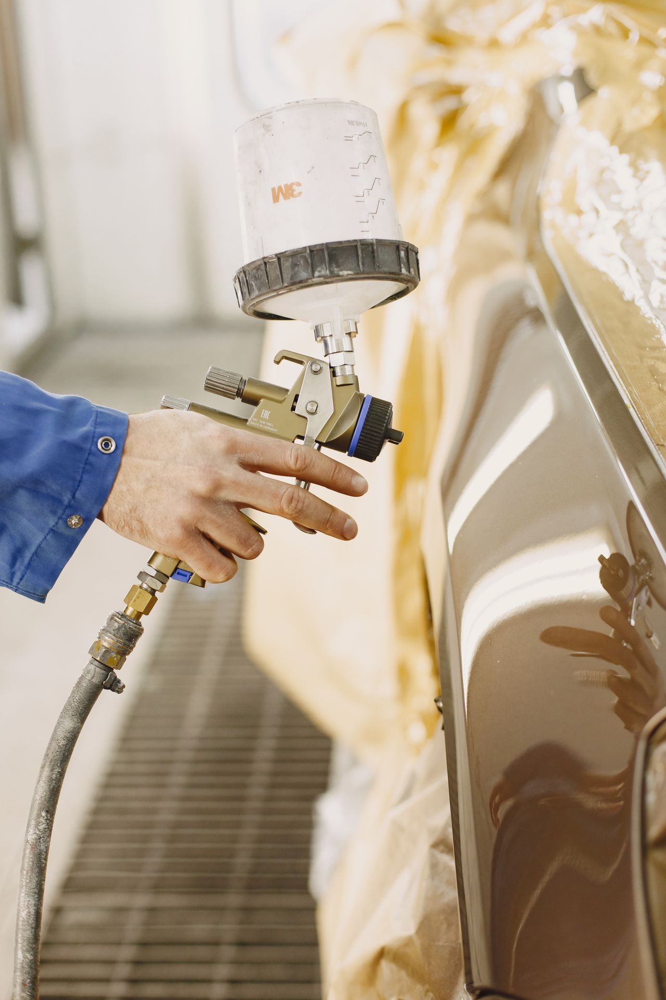
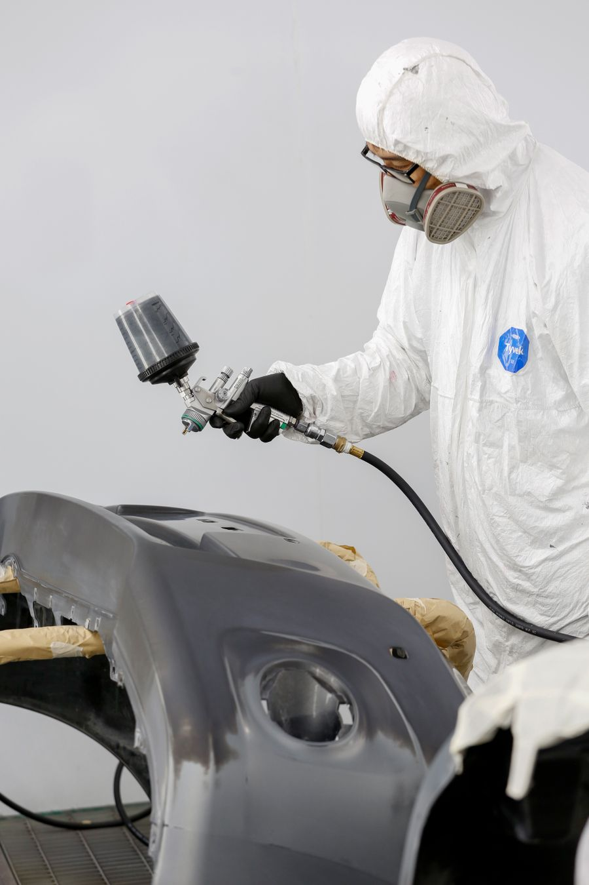
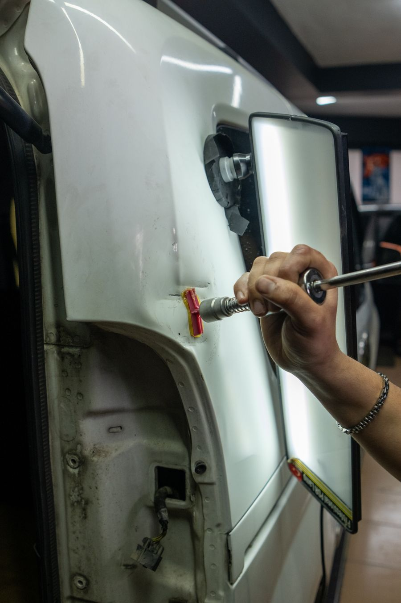
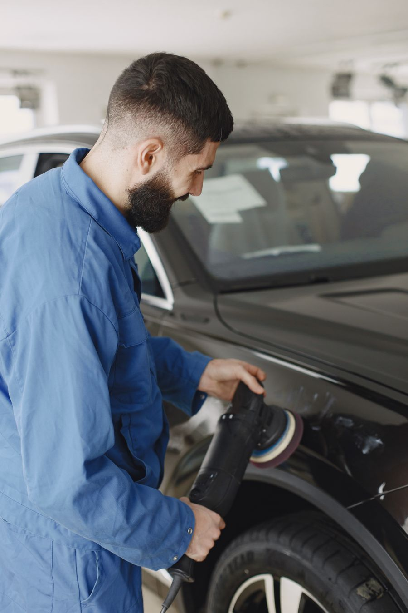

Réparation après sinistre
Expertise, réparation, peinture : nous traitons directement avec votre assureur et l'expert.
Un accrochage, une rayure, un sinistre ? On s'occupe de tout, assurance comprise.
Réparation après accident, pare-chocs, rayures, bosses et peinture. Vous êtes libre de choisir votre carrossier : on gère le dossier avec votre assurance et on vous prête un véhicule pendant les travaux.
Réponse dans la journée. Venez aussi sans rendez-vous pour une estimation.

Cliquez sur votre situation : le formulaire se remplit tout seul.
Nos services
Expertise, réparation, peinture : nous traitons directement avec votre assureur et l'expert.
Cabine de peinture, teinte contrôlée au spectrophotomètre pour un raccord invisible.
Pour les bosses et la grêle sans rayure : la peinture d'origine est conservée.
Polissage, réparation plastique, remplacement et peinture des pare-chocs.
Remplacement de pare-brise et de vitres, réparation d'impacts.
Une voiture vous est prêtée pendant toute la durée des travaux, sur réservation.
Comment ça se passe
Par téléphone, formulaire ou directement à l'atelier.
On regarde les dégâts avec vous et on vous explique les options.
Déclaration, expert, accord de prise en charge : on s'en charge.
Votre voiture vous est rendue réparée, contrôlée et lavée.
Réparations récentes

Citadine · Choc arrière

Berline · Grêle

SUV · Portière rayée
Nos engagements
Julien Dumas, gérant, carrossier peintre
« Après mon accrochage, ils ont tout géré avec l'assurance. Voiture de prêt, réparation en quatre jours, rendue lavée. »
« Débosselage de la grêle sans repeindre, on ne voit plus rien. Très bon accueil et délai tenu. »
Questions fréquentes
Votre question n'est pas là ?
Appelez-nous au 03 53 01 64 29.
Non. Vous êtes libre de choisir votre réparateur, même si votre assureur vous en recommande un. Nous prenons en charge le dossier avec votre assurance et l'expert.
De quelques heures pour un débosselage à quelques jours pour une réparation après sinistre, selon les pièces à commander. Le délai est annoncé sur le devis.
Cela dépend de la réparation ou du remplacement, de la peinture et du modèle. Nous vous donnons un prix précis après une estimation de 20 minutes à l'atelier.
Une technique qui remet la tôle en forme par l'arrière, sans poncer ni repeindre. Elle convient aux bosses sans rayure, comme la grêle ou les coups de portière.
Oui, sur réservation, pendant toute la durée des travaux. Selon votre contrat, il peut aussi être pris en charge par l'assurance.
Non, vous pouvez passer à l'atelier aux heures d'ouverture. Avec un rendez-vous, l'attente est plus courte.
Devis gratuit
Décrivez les dégâts en quelques mots. On vous rappelle pour fixer l'estimation et réserver un véhicule de prêt si besoin.
Du lundi au vendredi, 8 h à 18 h 30, samedi 9 h à 12 h
112 rue du Faubourg de Roubaix, 59000 Lille
Nous intervenons à Lille, Roubaix, Tourcoing, Villeneuve-d'Ascq, Marcq-en-Barœul, Lambersart, La Madeleine, Mons-en-Barœul, Hellemmes.